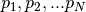

11. Glossary
Keywords in BAMM and BAMMtools. Alphabetical. Words in glossary are in bold.
- Core shift
- A rate shift location (e.g., associated with a particular branch in a phylogeny) that has a marginal probability greater than some threshold value. In the BAMM model, the very manner in which shifts are proposed and deleted during MCMC simulation means that, sooner or later, a shift will be sampled on every branch of the tree. Most of these are non-core shifts that don’t stick around and which don’t contribute to your ability to model the data. To distinguish between core and non-core shifts in the posterior, we identify all shift locations where shifts are observed more often that expected under the prior alone. If the frequency of observing a shift at a particular location is not different from that which we expect under the prior alone, we term this a “non-core” shift location. We then ignore all non-core shifts during the enumeration of distinct shift configurations.
- Credible set of shift configurations
- The set of distinct shift configurations that account for some total probability of the data (typically 95%). To delimit this set, we identify all distinct shift configurations and rank them by their posterior probability. The set of shifts (starting with the most probable) that sum to 0.95 (for the 95% credible set) is this set. Alternatively, if you have N total distinct shift configurations, with probability , the 95% credible set is the smallest set (of N total) that sum to a cumulative probability of 0.95. The idea of credible set of phylogenetic trees is conceptually identical to this.
- Cumulative shift probability tree
- A phylogenetic tree where branch lengths are scaled by the cumulative probability that a rate shift occurred somewhere between the focal branch and the root of the tree. For a given branch X, this is computed by summing the marginal shift probabilities for each branch that lies on the path connecting X to the root. A value of 0.98 means that 98% of the samples from the posterior have a rate shift somewhere between the focal branch and the root. This would also imply that macroevolutionary dynamics for branch X and the root are decoupled (e.g., in distinct regimes) for 98% of samples in the posterior.
- Distinct shift configuration
- A topologically distinct configuration of rate shifts. Imagine a rooted phylogenetic tree of 2 taxa, with branches A and B. This tree has a total of 4 distinct shift configurations: shift on A, shift on B, shift on both A and B, and shifts on neither A nor B. For any BAMM analysis, we can tabulate the frequency of each of these distinct shift configurations from the posterior.
- Event
- In the BAMM framework, an event initiates a macroevolutionary rate regime. An event can occur along any branch of a phylogeny, and there is always a root event associated with the root of the tree. All lineages downstream of a given event are governed by the evolutionary rate parameters of the event, until either (i) the end of the tree (tips) are reached, or (ii) another event occurs.
- Macroevolutionary cohort matrix
- A macroevolutionary cohort matrix represents the pairwise probability that any two taxa share a common macroevolutionary rate regime. Macroevolutionary cohorts of taxa are those that exhibit statistical dynamics suggesting that they share common evolutionary rate parameters. In the simplest case, with no rate heterogeneity (no rate shifts), all taxa share the same rate root process and are thus part of a single cohort.
- Marginal shift probability
- The probability of a rate shift on a particular branch of a phylogenetic tree. It is obtained by marginalizing over everything else in the posterior.
- Marginal shift probability tree
- A phylogenetic tree where branch lengths are scaled by the corresponding marginal shift probability.
- Maximum a posteriori probability (MAP) shift configuration
- An estimate of the best distinct shift configuration. This is the distinct shift configuration that has the highest posterior probability (e.g., was sampled most frequently during simulation of the posterior).
- Maximum shift credibility configuration
- Another measure of the overall best distinct shift configuration. This is best viewed as analogous to the maximum clade credibility (MCC) tree in a Bayesian phylogenetic analysis.
- Non-core shift
- A topological shift location (e.g., a unique branch) with low marginal shift probability. Formally, these shifts are defined by having marginal shift probabilities that are not substantially different from that expected under the prior.
- Phylorate plot
- A visualization of evolutionary dynamics on phylogenetic trees where colors are used to represent instantaneous evolutionary rate parameters at any point in time along any branch. The mean phylorate plot summarizes rate dynamics across the entire posterior, because colors for any branch segment reflect the mean of the marginal density of evolutionary rates at any particular point in time.
- Regime
- A distinct set of macroevolutionary rate parameters associated with an event. This does not imply that rates are constant through time; all lineages within a particular clade might share a common diversity-dependent rate regime, for example.
- Root process
- The set of evolutionary rate parameters at the root of the tree. In the absence of rate shifts, all lineages in the phylogeny have dynamics that are governed by the root process.